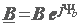
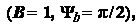
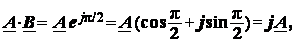
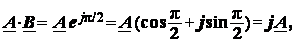
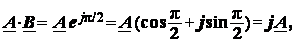

С л о ж е н и е и в ы ч и т а н и е комплексных чисел. Сложение и
вычитание комплексных чисел удобно проводить в алгебраической форме, например,
A ± B = (a1 ± ja2) ± (b1 ± jb2) = (a1 + b1) ± j(a2
± b2). (2.18)
Чтобы сложить два комплексных числа, заданных, например, в показательной форме, A = AejΨa и B = BejΨb, вначале их нужно преобразовать в алгебраическую форму согласно (2.17), а затем использовать соотношение (2.18).
У м н о ж е н и е и д е л е н и е комплексных чисел. Умножение и деление комплексных чисел удобно проводить в показательной форме:
• при умножении комплексов A и B их модули перемножают, a аргументы суммируют:
 (2.19)
(2.19)
• при делении комплексов A и B их модули делят, а аргументы вычитают:
(2.20)
У м н о ж е н и е к о м п л е к с а A на j, j 2, … Если комплекс =  то умножение вектора А на вектор B, т.е.
 

равнозначно повороту вектора А на угол
π/2 в положительном направлении (еjπ/2 = j есть оператор поворота вектора A на угол π/2 против хода часовой стрелки), в то время как умножение вектора А на оператор −j = e−jπ/2 равносильно его повороту на угол π/2 по ходу часовой стрелки (см. вектор −jA на рис. 2.11).
Умножение вектора A на оператор j2 равносильно повороту вектора А на угол ± π. (см. рис. 2.11), т. е. получим противоположно направленный вектор